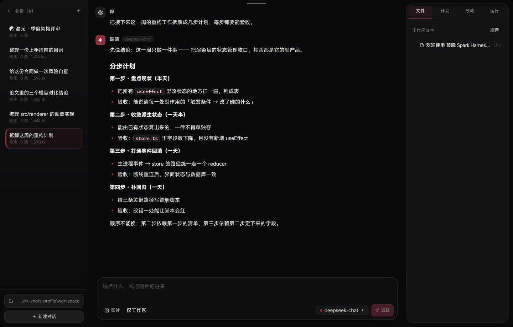
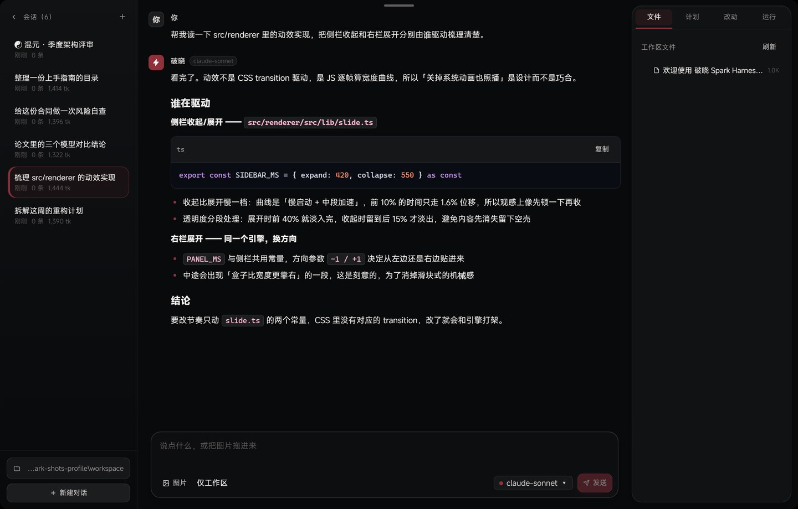
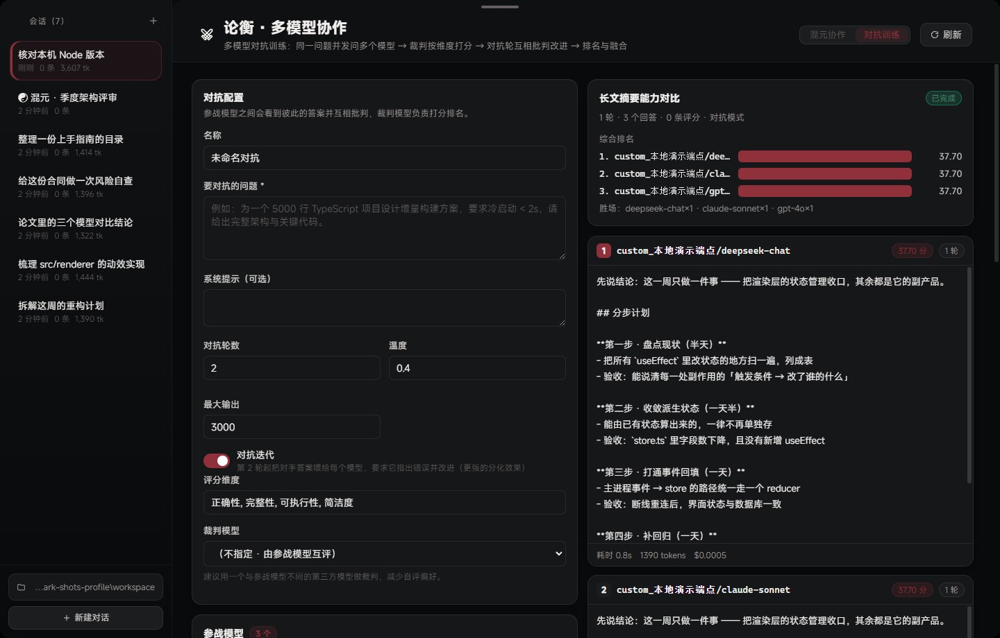
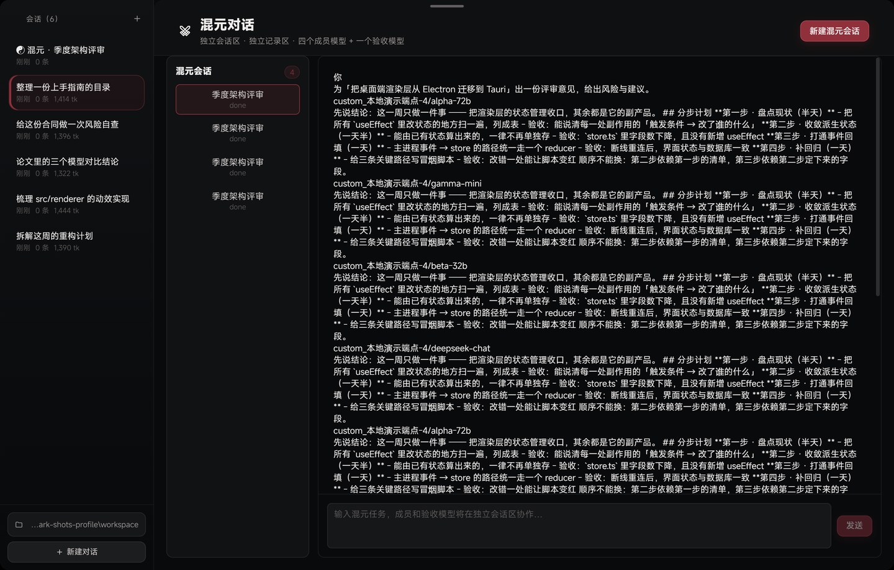
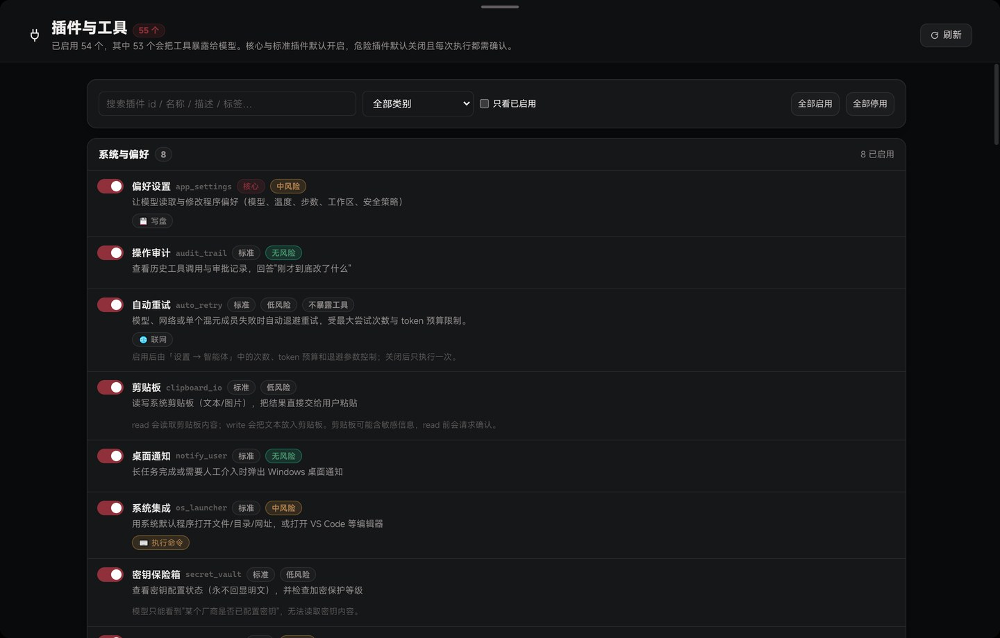
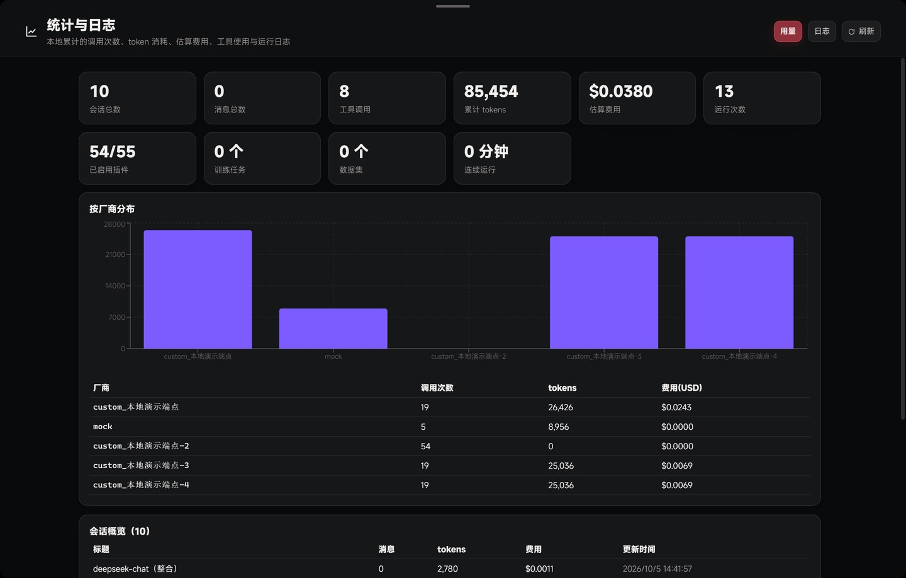
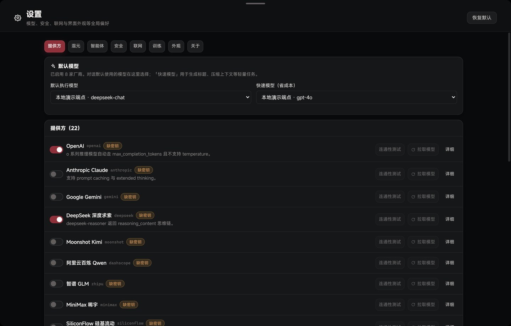
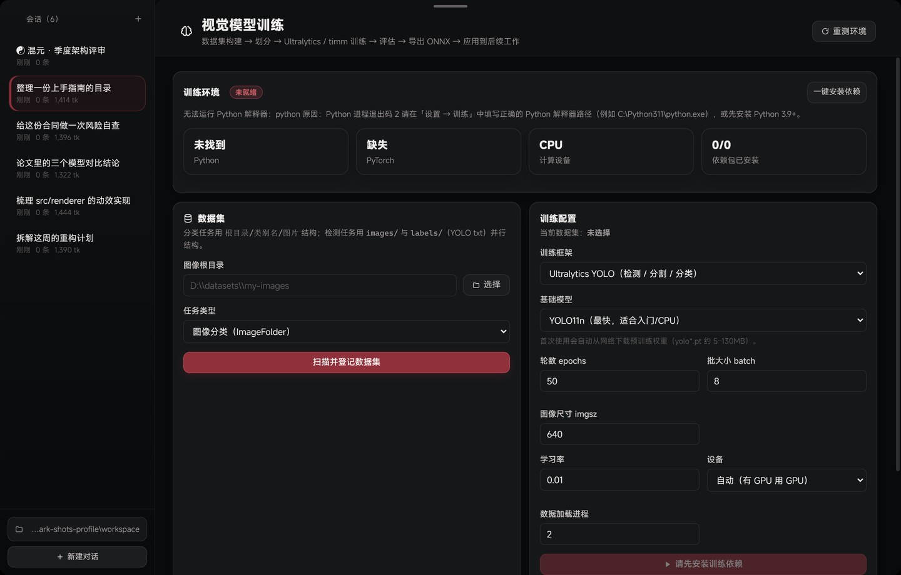

把多家大模型 当成一支团队来用
Local-first multi-model AI workbench
模型在这里不只是聊天：它可以读写你的文件、执行命令、调用 54 个插件工具；你可以让 4 个成员模型 + 1 个独立验收模型协同完成同一个任务； 也可以用「论衡」让多个模型同题竞技、按维度打分，用你自己的真实任务决定该用哪个模型。 所有会话、密钥与统计都在你自己的电脑上。
都是真机跑出来的画面，不是画的
下面每一张都来自 Windows x64 打包版的实际运行窗口：界面、工具调用卡片、评分排名、用量统计都是应用自己渲染的。对话内容是为了演示编的，界面本身没有做任何修补。左右拖动可以横着翻，点任意一张可以放大看原图。








工作里的九个真实麻烦
这些问题不是「AI 不够聪明」，而是工具的形状不对。下面每一条都是具体的、可验证的做法差异。
七个视图，覆盖
用模型、选模型、训模型
顶部导航七项，可用 Ctrl+1 ~ Ctrl+7 直达。点左侧任一项查看该视图的能力清单。
混元：不是「多开几个模型」，是有角色的协作
多数聚合工具的多模型是「并排各答一份」，最终仍要你自己读、自己判断、自己合并。 混元把这件事做成了角色分工：成员并行处理，另有 1 个独立验收模型 只负责审阅产出、纠正冲突、收敛出一份终稿 —— 它不占成员名额，也不是简单的多数表决。
验收模型
独立的第 5 个槽位只审阅成员产出，不只做多数表决：指出遗漏与错误，权衡后给出终稿。
- 单个成员失败不会拖垮整组
- 只用成功成员的产出出终稿
- 验收模型不可用时自动回退到可用模型
- 可选「协同轮」：把彼此产出喂回再做一轮改进
论衡：用你自己的任务，决定该用哪个模型
同题多答 → 裁判按维度打分 → 对抗轮互相批判 → 给出排名与融合结论。 默认评估维度为正确性、完整性、可执行性、简洁度，可直接用于模型选型、方案评审， 或对比同一模型在不同提示词下的表现。
按架构性事实对比，不做「谁更好」的笼统结论
市面上的 AI 产品大致分四类：云端 AI 客户端、AI 编程 IDE、模型聚合客户端、本地模型运行器。 下表按可验证的产品形态与架构特征逐项对照。
| 维度 | 云端 AI 客户端 ChatGPT / Claude / Gemini |
AI 编程 IDE Cursor / Windsurf / Copilot |
模型聚合客户端 各类多模型聊天前端 |
本地模型运行器 Ollama / LM Studio |
破晓 Spark Harness |
|---|---|---|---|---|---|
| 模型来源 | 单一厂商 | 以少数合作为主 | 多厂商 | 本地模型为主 | 多厂商 + 任意自定义 API，跨协议混用 |
| 运行位置 | 云端为主 | 云端为主，插件在本地 | 本地壳 + 云端模型 | 本地 | 本地优先，数据在本机 |
| 数据去向 | 上传厂商服务器 | 上传厂商服务器 | 取决于转发服务 | 不出本机 | 仅发往你自己配置的模型服务 |
| 文件 / 命令工具链 | 通常无，或很受限 | 有，深度绑定编辑器 | 多数无 | 通常无 | 有，且带权限分级与审批 |
| 多模型协同 | 无 | 通常为单模型切换 | 多为并排显示各自回答 | 无 | 4 成员 + 1 独立验收模型，含失败隔离与降级 |
| 记录隔离 | 单一会话流 | 单一会话流 | 多模型输出易混流 | 单一会话流 | 协作与主对话双会话区、双记录区 |
| 模型对比评测 | 无 | 无 | 少数有并排对比 | 无 | 打分 + 排名 + 对抗轮 |
| 本地模型训练 | 无 | 无 | 无 | 仅推理，训练需另配 | 内置训练闭环，可导出权重 |
| 成本结构 | 订阅制 | 订阅制，按席位 | 视转发服务而定 | 本地算力成本 | 程序内用量与费用统计，成本取决于你接入的厂商 |
| 可移植性 | 账号绑定 | 账号绑定 | 视产品而定 | 视产品而定 | 便携版可整体拷贝到任意目录 / U 盘 |
| 界面语言 | 通用风格 | 通用风格 | 通用风格 | 通用风格 | 东方水墨取向（玄夜 / 宣纸），可调动效与无障碍 |
54 个插件工具，按需启停
插件为模型增加工具能力：文件与代码、联网检索、计算与数据处理、智能体协作、模型能力、视觉训练、系统与偏好。 点左侧分类查看该类下的具体工具。
训练：把「用模型」和「训模型」放进同一个程序
多数产品只覆盖其中一段：聊天客户端不做 Agent 工具链，编程 IDE 不做多模型协同评测， 本地运行器不做训练闭环。破晓把三段放在同一套界面与同一份本地数据上。
八件具体的事
-
01
不锁定厂商，随时换血内置 DeepSeek、OpenAI、Anthropic、Gemini、Ollama 等协议适配，共 18 家提供方； 也可添加任意 OpenAI 兼容 / Anthropic / Gemini / Ollama 协议的自定义服务。新模型上线，填个名字就能用。
-
02
任务级容错协作与 Agent 运行都自带重试与降级，可配重试次数、退避间隔与 token 预算。 失败被隔离而不是中断整组任务，失败状态在界面上可见。
-
03
过程可见、可追溯成员状态、重试、失败原因、执行日志都可展开查看，不是黑箱等待。 右侧「运行」面板集中展示运行态与待确认操作。
-
04
权限分级 + 审批默认「仅工作区」：文件操作限制在你指定的白名单目录内。写盘、执行命令、联网可分别要求审批， 命令白名单与黑名单可自行维护。放开权限永远是显式选择。
-
05
成本可核算统计页按时间维度看 token 与费用，多模型并行花了多少一目了然， 便于判断「这个问题值不值得上混元」。
-
06
为长任务设计的上下文管理上下文预算与自动压缩阈值可调，多会话并行时各自的忙碌状态互不干扰。
-
07
本地优先与可移植便携版可拷到 U 盘运行，程序不依赖安装位置，代码无硬编码盘符。 会话、密钥、统计、训练权重全部落在本机。
-
08
克制的界面与可调的动效悬浮胶囊顶栏、玄夜 / 宣纸双主题；动效采用非线性曲线逐帧驱动， 并提供应用内动效开关，不受系统「减少动效」一刀切影响。需要无障碍优先时可切回跟随系统。
数据在本机，模型的选择权在你
程序把请求发往你配置的模型服务；不接入云端就完全不联网。 对代码、合同、病历这类不便外发的内容，这一点是很多云端产品给不了的。
%APPDATA%\破晓 Spark Harness\。
备份就是直接复制这个目录；卸载不会删除它，需要清理时手动删即可。
除你主动配置的模型服务外，程序不向任何服务器上传数据。
能力越大，闸门越要清楚
一个能读写文件、执行命令的 Agent，如果没有明确的边界就是风险。 这一层是本程序里被设计得最保守的部分。
完全权限 —— 可访问整块磁盘，写盘与执行命令不再逐次询问。放开权限是敏感操作，需自行评估。
玄夜与宣纸，两套配色同一套令牌
暗酒红作主色，暖白作文本，深煤灰作层级。浅色主题不是把深色反相，而是重新定义了一套表面与分割线， 保证两个主题下的对比度与层次都成立。
--bg-0 … --bg-4、
文本四级 --text-0 … --text-3，
主色 #8f303b 在两个主题下保持一致，
另有语义色四组（成功 / 警告 / 错误 / 信息）。
两种方式，三分钟跑起来
Windows x64 桌面应用，版本 1.0.0。需要自备模型厂商的 API Key，或使用本机 Ollama；训练功能需要本机 Python。
PoxiaoSparkHarness-Setup-1.0.0.exe。
可自选安装目录，自动创建桌面与开始菜单快捷方式，
无需管理员权限，卸载不会删除你的会话与配置。
PoxiaoSparkHarness.exe。
可整体拷到 U 盘或其他目录，不依赖安装位置。
键盘上能做的事
你手上有几家模型的 Key，
它们本该能一起干活
破晓 Spark Harness 把「用模型、选模型、训模型」放在同一套界面与同一份本地数据上， 并且默认假设你的数据不该离开你的电脑。